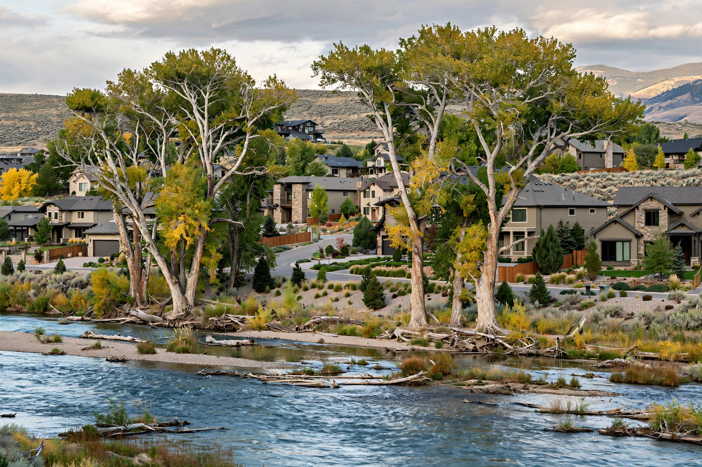

Mold or water damage in Eagle? Get help from a local crew.
Eagle looks dry, but water gets in from the river side, the foothills, and summer irrigation ditches. One call connects you with a crew that knows Eagle's neighborhoods — Banbury, Legacy, Two Rivers, the north bench.
Eagle homeowners ask
Our Eagle home is only a few years old. Can it still get mold?
Yes. Newer Eagle builds are tightly sealed, so when a supply line leaks inside a wall or a shower pan fails, moisture stays trapped instead of drying out. What matters is water intrusion, not the year on the deed.
We live near the Boise River. Does that raise our mold risk?
It can. Riverside lots sit over shallow groundwater, and spring runoff pushes moisture through slab edges into crawlspaces. Not every riverside home has a problem — but mustiness in lower levels after wet months is worth checking.
Our home is on acreage with flood irrigation. Is that a concern?
It can be, especially where irrigation water ponds against the foundation or runs along the same side of the house all season. Saturated soil presses moisture through foundation walls and into basements or crawlspaces. Grading that slopes away from the house and keeping irrigation heads aimed outward go a long way.
Do you take on larger estate-style homes?
Yes. Eagle has some of the valley's biggest homes, and bigger homes mean more bathrooms, longer pipe runs, and more wall area where a slow leak can hide. The approach is the same — find the moisture, contain the work area, remove what's damaged — just scaled to the size of the house.
Our place sits empty for part of the year. What should we watch for?
Unoccupied homes are where small leaks become big ones. A supply line that drips for three months while you're away can soak framing and subfloor before anyone notices. Before you leave, shut the main water valve. When you return, walk every room and sniff for mustiness — early catches are cheap, late ones aren't.
Four local patterns behind most Eagle jobs
Eagle's setting — river on one side, foothills on the other — creates moisture problems flatter areas don't see.
Riverside groundwater
Lots near the Boise River sit over a shallow water table. In wet springs it rises and pushes moisture through slab edges — often surfacing as mustiness weeks after the river peaks.
Foothill runoff
Homes on Eagle's north bench catch foothill drainage. When grading sends it toward the foundation, the uphill wall stays damp all spring.
Irrigation-soaked soil
Eagle's acreage properties run flood or furrow irrigation all summer. Where water ponds against the foundation, soil stays saturated for months and moisture wicks through foundation walls.
Big-house plumbing
Eagle has some of the valley's largest homes — more bathrooms, longer pipe runs, guest suites. Every extra fixture is another leak point, and in a big house a slow drip inside a wall can run for months unnoticed.
What happens after you dial
Describe what you're seeing
A few minutes on the phone about where the problem is, how long it's been there, and your part of Eagle.
Get matched to the right service
You're matched with a local provider for the actual problem — testing, removal, extraction, or repair.
Someone looks in person
A real inspection with moisture readings comes before any quote. No blind estimates.
Eight ways we help Eagle homeowners
Pick the one that matches what you're seeing. Each page covers causes, signs, and the fix.
Mold Testing
Lab-analyzed air and surface samples, when you need hard numbers first.
Learn more → MoldMold Removal
Contained removal of established growth, with the moisture source fixed.
Learn more → MoldBasement Mold Removal
Below-grade growth fed by groundwater, hillside seepage, or soaked soil.
Learn more → MoldCloset Mold Removal
Musty closets on exterior walls where trapped humidity feeds growth.
Learn more → WaterEmergency Water Extraction
Standing water pulled out fast — burst lines, failed appliances, storm entry.
Learn more → WaterFlooded Basement Cleanup
Pump-out, structural drying, and salvage for flooded lower levels.
Learn more → WaterCeiling Water Damage Repair
Stains, bubbling paint, sagging drywall from roof leaks or overhead plumbing.
Learn more → WaterWater Damaged Drywall Repair
Cut-out, drying, and rebuild of soaked drywall, matched to your finish.
Learn more →Something wrong in your Eagle home?
Call now. We'll talk through what you're seeing and point you to the right next step.